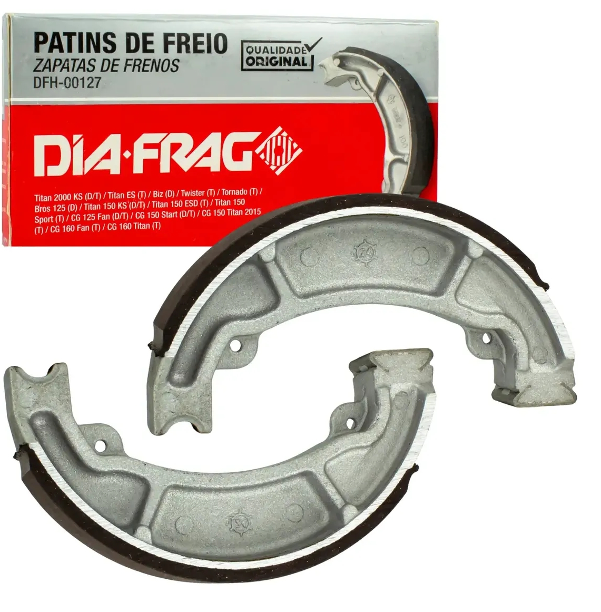

Segurança começa nos freios.
Encontre o kit ideal para o seu próximo caminho.
MAIS VENDIDO

G&D / LINHA CARRO
Kit Freio Dianteira Fiat Argo Cronos Pulse 2022 A 2026
R$ 83,55

Kit Pastilha Freio Dianteira Vw T-cross Nivus Virtus Polo Tsi
R$ 179,90

Kit Pastilhas Freio Dianteiro Traseiro Cruze 1.8 2012 /2016
R$ 182,90

Filtro De Oleo Mann Vw Polo Nivus Virtus Up Taos Tcross Tera
R$ 29,99

Filtro De Óleo Prisma Celta Montana Onix Astra Meriva Vectra
R$ 25,99

Filtro De Óleo Argo Cronos Mobi Nova Strada Fiat 7094709
R$ 70,90

Amortecedor Dianteiro Traseiro Nakata Fiat Uno
R$ 995,99

Kit 4 Amortecedor Traseiro Dianteiro Onix Prisma Cobalt
R$ 1.188,99

4 Amortecedor Original Nakata Gol Voyage G5 G6 G7 + Kit Compressão
R$ 794,99
MAIS VENDIDO

G&D / LINHA MOTO
Kit freio dianteiro G&D Moto Titan/Fan-160 cilindras
R$ 38,00

Kit freio traseiro G&D Moto Titan/Fan-160 cilindras
R$ 32,00

Kit freio traseiro G&D Lander 250
R$ 52,00

Filtro Óleo Intruder 125 2002 2005 2008 2010 2012 2014 2016
R$ 42,50

Filtro De Óleo Dafra Apache 150 De 2010 2011 2012 2013 2014
R$ 25,00

Filtro De Óleo Motor Yamaha Xj6 N F 600 Xj6n Xj6f 2010-2019
R$ 37,00

Par Amortecedor Suspensão Traseira Cg 150 160 Fan Titan
R$ 179,50

Par Amortecedor Traseiro Biz 125 2011 2012 2013 2014 A 2022
R$ 119,99

Amortecedor Traseiro Lander 250 2007 A 2022 Modelo Original
R$ 239,90